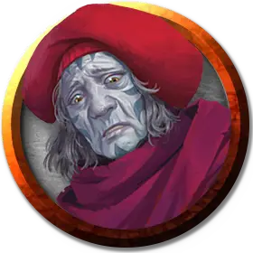

Арадрина Сова
Aradrine the Owl
Средний Гуманоид (Чародей, Голиаф), законно-нейтральный, именной НИП

Класс Доспеха 13 (16 с доспехом мага)
Хиты 127 (17к8 + 51)
Скорость 40 футов
| мод | спас | ||
|---|---|---|---|
| СИЛ | 13 | +1 | +1 |
| ЛОВ | 16 | +3 | +3 |
| ТЕЛ | 16 | +3 | +3 |
| мод | спас | ||
|---|---|---|---|
| ИНТ | 15 | +2 | +2 |
| МДР | 17 | +3 | +6 |
| ХАР | 20 | +5 | +8 |
Навыки Восприятие +6, История +5, Магия +8, Обман +11
Сопротивление урону психическая энергия, холод
Чувства истинное зрение 60 футов, пассивное Восприятие 16
Языки Общий, Великаний, Телепатия 60 фт.
Опасность 8 (3900 опыта)
Бонус мастерства +3
Особенности
Языки. Знает Общий и ещё три языка.
Чужеродный разум. Если существо пытается прочитать мысли Арадрины или наносит ей урон психической энергией, это существо должно преуспеть в спасброске Интеллекта Сл 16, иначе станет ошеломлённым до начала своего следующего хода.
Сопротивление магии. Арадрина совершает с преимуществом спасброски от заклинаний и прочих магических эффектов.
Мощное телосложение. Арадрина считается на один размер больше когда определяется её грузоподъёмность и вес, который она может толкать, тянуть и поднимать с земли.
Действия
Багровый снаряд. . Рукопашная или Дальнобойная атака заклинанием: +8 к попаданию, досягаемость 5 футов или дистанция 60 футов, одно существо. Попадание: 27 (4к10 + 5) урона психической энергией.
Использование заклинаний. Арадрина может накладывать следующие заклинания, используя Харизму в качестве базовой характеристики (Сл спасброска от заклинания 16):
• 2/день каждое: очарование личности [charm person], доспехи мага [mage armor], послание [sending];
• 1/день: переносящая дверь [dimension door].
Бонусные действия
Стихийный слуга (1/день). Златоуст магическим образом призывает земляного элементаля [earth elemental], который появляется в свободном пространстве, которое она может видеть в пределах 60 футов. Ход земляного элементаля начинается сразу после златоуста, по той же инициативе и подчиняется командам златоуста. Земляной элементаль исчезает через 1 минуту или когда он или златоуст умирают.
Описание
Оккультисты златоусты — харизматичные лидеры. Чужеродные секреты, с которыми они сталкиваются, могут вызвать у них чувство беспокойства, паранойи и подозрительности. Они начинают видеть вещи, которых нет и воображать заговоры, вызванные страхами, что другие пытаются вытеснить их.
Оккультисты алой мечты
Консорциум Алой мечты рассматривается как эзотерическая, ориентированная на прибыль, но в конечном счете безвредная группа охотников за привидениями и продолжателей городских легенд. Это мнение не является неточным, но руководство общества одержимо одним видом легенд, в частности: теми, которые связаны с Луной Дурных Предзнаменований, Руидусом и древними фигурами, проклятыми воздействием ее инопланетного влияния.
Самые жестокие желания и пристрастия самых одержимых агентов общества усилились при контакте с предметами, зараженными руидием.